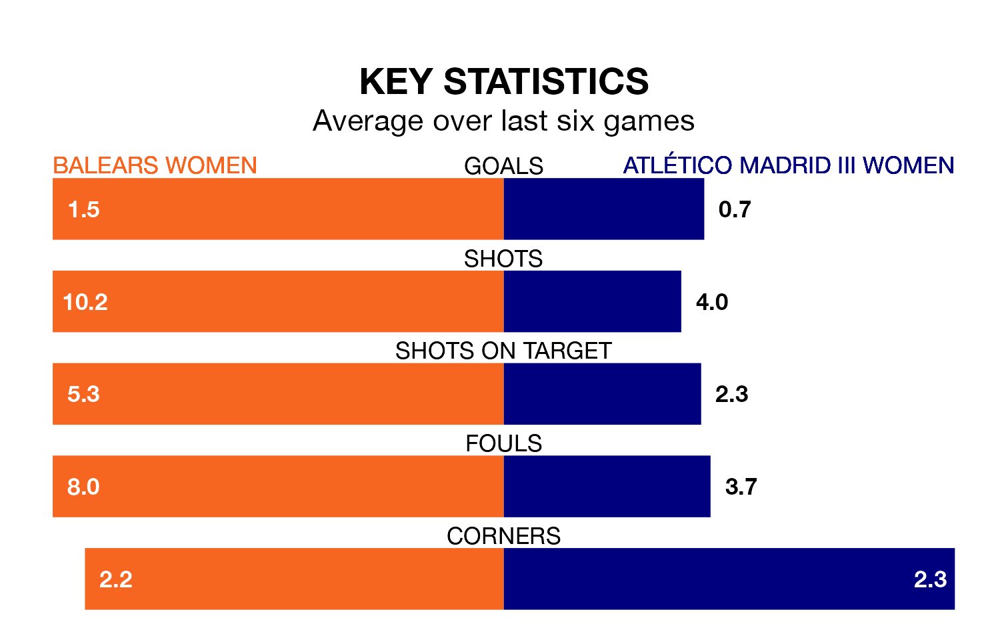

The Segunda Federación Femenina's top two sides face each other in Sunday's kick-off, when second-placed Balears Women host zero-placed Atlético Madrid III Women.
Balears have picked up 18 wins and four draws from 26 games so far this season, and sit 24 points above the visitors going into the 3.30pm match.
Atlético Madrid III, meanwhile, have won eight and drawn 10, picking up 34 points.
With 48 goals in 26 games so far this season, Balears are the league's highest scorers with 1.8 goals per game. And they are conceding fewer than average, letting in 23 goals at a rate of 0.9 per game.
Atlético Madrid III, meanwhile, are below average scorers, with 1.1 goals per game, compared to a league average of 1.3. They have conceded 1.2 goals per game.
The home side are in fantastic form in the Segunda Federación Femenina, with five wins and a draw from their last six games.
With two wins and two draws over that period, the visitors' form is much worse – they have taken eight points from 18, compared to Balears's 16.
Balears's last match was on April 7, a 2-0 win against Racing Féminas, with getting the goals for Balears.
Atlético Madrid III drew 1-1 with Athletic Club III Women last time out, on April 6, with on the scoresheet.
Updated: 14:47 (UTC), 09/04/24